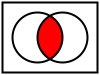

intersection

Definition: In mathematics, the intersection of two or more objects is another object consisting of everything that is contained in all of the objects simultaneously. For example, in Euclidean geometry, when two lines in a plane are not parallel, their intersection is the point at which they meet. More generally, in set theory, the intersection of sets is defined to be the set of elements which belong to all of them. Unlike the Euclidean definition, this does not presume that the objects under consideration lie in a common space.
Source: Wikipedia
Wikipedia Page (Something wrong with this association? Let us know.)
Wikidata Page (Something wrong with this association? Let us know.)